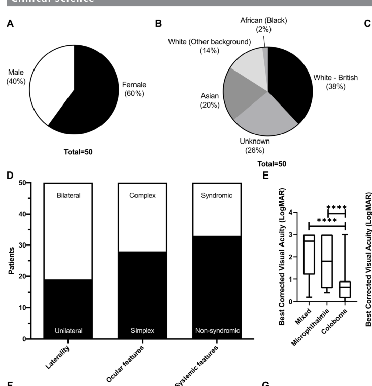

Microphthalmia with coloboma is a congenital structural eye malformation in which a small eye (microphthalmia) is combined with a colobomatous defect — missing ocular tissue, classically inferonasal, that results from failure of the embryonic optic (choroid) fissure to close. It sits within the microphthalmia–anophthalmia–coloboma (MAC, also called AMC) spectrum and is curated here in its isolated / non-syndromic form, distinct from the syndromic microphthalmia entries (e.g. STRA6-related Matthew-Wood syndrome, CHARGE syndrome). The disorder is genetically heterogeneous: dominant, recessive, and X-linked alleles in eye-development transcription factors and signaling genes (SOX2, OTX2, PAX6, MAB21L2, FOXE3, ALDH1A3, FZD5, and others), copy-number variants, and non-coding regulatory variants all converge on disrupted optic-cup morphogenesis and optic-fissure closure. MAC accounts for roughly 15–20% of severe childhood visual impairment and blindness worldwide.
Ask a research question about Microphthalmia with Coloboma. OpenScientist will conduct autonomous deep research using the Disorder Mechanisms Knowledge Base and PubMed literature (typically 10-30 minutes).
Do not include personal health information in your question. Questions and results are cached in your browser's local storage.
name: Microphthalmia with Coloboma
creation_date: "2026-06-15T00:00:00Z"
description: >-
Microphthalmia with coloboma is a congenital structural eye malformation in
which a small eye (microphthalmia) is combined with a colobomatous defect —
missing ocular tissue, classically inferonasal, that results from failure of
the embryonic optic (choroid) fissure to close. It sits within the
microphthalmia–anophthalmia–coloboma (MAC, also called AMC) spectrum and is
curated here in its isolated / non-syndromic form, distinct from the
syndromic microphthalmia entries (e.g. STRA6-related Matthew-Wood syndrome,
CHARGE syndrome). The disorder is genetically heterogeneous: dominant,
recessive, and X-linked alleles in eye-development transcription factors and
signaling genes (SOX2, OTX2, PAX6, MAB21L2, FOXE3, ALDH1A3, FZD5, and others),
copy-number variants, and non-coding regulatory variants all converge on
disrupted optic-cup morphogenesis and optic-fissure closure. MAC accounts for
roughly 15–20% of severe childhood visual impairment and blindness worldwide.
category: Mendelian
parents:
- hereditary disease
- developmental eye disorder
synonyms:
- MAC spectrum
- microphthalmia-anophthalmia-coloboma spectrum
- AMC spectrum
- isolated microphthalmia with coloboma
- colobomatous microphthalmia
disease_term:
preferred_term: Microphthalmia with coloboma
term:
id: MONDO:0000170
label: microphthalmia, isolated, with coloboma
notes: >-
Scope: this entry covers the ISOLATED / non-syndromic MAC presentation
centered on the optic-fissure-closure defect mechanism. Syndromic forms in
which MAC is one feature of a multisystem disorder (Matthew-Wood/STRA6,
CHARGE, branchiooculofacial syndrome, etc.) are curated as their own entries
and are referenced here only as differential diagnoses. The numbered MCOPCB
(microphthalmia/coloboma) OMIM loci and the gene-defined forms are modeled as
subtypes. GeneReviews has a retired "Microphthalmia/Anophthalmia/Coloboma
Spectrum" chapter (PMID:20301552) used as the clinical baseline.
references:
- reference: PMID:20301552
title: "Microphthalmia/Anophthalmia/Coloboma Spectrum – RETIRED CHAPTER, FOR HISTORICAL REFERENCE ONLY."
tags:
- GeneReviews
has_subtypes:
- name: SOX2-MAC
display_name: SOX2-related microphthalmia/anophthalmia with coloboma
description: >-
Most common single-gene cause of severe bilateral microphthalmia/anophthalmia
in the MAC spectrum, typically de novo dominant SOX2 loss-of-function;
explains an estimated 10–15% of cases.
- name: OTX2-MAC
display_name: OTX2-related microphthalmia/anophthalmia with coloboma
description: >-
Dominant OTX2 variants causing microphthalmia/anophthalmia, often with
coloboma; estimated to explain 2–5% of cases. OTX2 also binds conserved
enhancers upstream of MAB21L2.
- name: PAX6-MAC
display_name: PAX6-related microphthalmia with coloboma
description: >-
PAX6 haploinsufficiency, classically aniridia, can present with
microphthalmia and colobomatous defects within the anterior-segment and
MAC spectrum.
- name: MAB21L2-MAC
display_name: MAB21L2-related microphthalmia with coloboma
description: >-
Coding MAB21L2 variants and non-coding regulatory deletions upstream of
MAB21L2 cause microphthalmia and coloboma; a worked example of non-coding
regulatory pathogenesis in MAC.
- name: FOXE3-MAC
display_name: FOXE3-related microphthalmia with coloboma
description: >-
FOXE3 variants cause anterior-segment dysgenesis, microphthalmia, and
coloboma; bilateral sensorineural hearing loss reported as a novel
association.
- name: ALDH1A3-MAC
display_name: ALDH1A3-related microphthalmia/anophthalmia with coloboma
description: >-
Recessive ALDH1A3 variants disrupt retinaldehyde dehydrogenase / retinoic
acid synthesis, causing autosomal recessive microphthalmia/anophthalmia.
- name: FZD5-Coloboma
display_name: FZD5-related coloboma with microcornea
description: >-
FZD5 (Wnt receptor) variants cause isolated and syndromic ocular coloboma;
most are dominant-negative, but a recessive hypomorphic allele causing
syndromic coloboma with microcornea is documented.
inheritance:
- name: Autosomal dominant inheritance
description: >-
Many MAC genes (SOX2, OTX2, PAX6, dominant MAB21L2 and FOXE3 alleles) act
dominantly, frequently as de novo variants.
inheritance_term:
preferred_term: Autosomal dominant inheritance
term:
id: HP:0000006
label: Autosomal dominant inheritance
evidence:
- reference: PMID:40038803
supports: SUPPORT
evidence_source: HUMAN_CLINICAL
snippet: "Chromosomal aberrations and mutations in genes such as PAX6, SOX2, OTX2, and CHD7 are contributors."
explanation: >-
Identifies the major dominant MAC transcription-factor genes within the
isolated/non-syndromic spectrum.
- name: Autosomal recessive inheritance
description: >-
Recessive MAC forms include ALDH1A3-related microphthalmia/anophthalmia and
the recessive hypomorphic FZD5 allele.
inheritance_term:
preferred_term: Autosomal recessive inheritance
term:
id: HP:0000007
label: Autosomal recessive inheritance
evidence:
- reference: PMID:39503780
supports: SUPPORT
evidence_source: HUMAN_CLINICAL
snippet: "Whole exome sequencing revealed a homozygous rare missense variant in FZD5."
explanation: >-
Documents a recessive (homozygous) MAC/coloboma allele, supporting
autosomal recessive inheritance in the spectrum.
- name: X-linked inheritance
description: >-
X-linked MAC contributors include BCOR and structural variants on the X
chromosome identified in MAC cohorts.
inheritance_term:
preferred_term: X-linked inheritance
term:
id: HP:0001417
label: X-linked inheritance
evidence:
- reference: PMID:36192130
supports: PARTIAL
evidence_source: HUMAN_CLINICAL
snippet: "novel variants in six known MAC genes (SOX2, KMT2D, MAB21L2, ALDH1A3, BCOR and FOXE3)"
explanation: >-
BCOR (X-linked) is among the solved MAC genes in this cohort, supporting
X-linked contributions to the spectrum.
pathophysiology:
- name: Failure of optic fissure closure
description: >-
The proximate developmental lesion in colobomatous microphthalmia is failure
of the embryonic optic (choroid) fissure to close. During optic-cup
morphogenesis the invaginating optic cup forms a transient inferonasal
groove (the optic fissure) through which the hyaloid vasculature enters;
fusion of its margins completes the eye. When fusion fails, tissue is left
"missing" at the inferonasal pole, producing coloboma of the iris, ciliary
body, retina/choroid, and/or optic nerve. In humans the fissure normally
closes by about the 7th week, so the insult is early-embryonic.
cell_types:
- preferred_term: Retinal progenitor cell
term:
id: CL:0002672
label: retinal progenitor cell
- preferred_term: Retinal pigment epithelial cell
term:
id: CL:0002586
label: retinal pigment epithelial cell
biological_processes:
- preferred_term: Closure of optic fissure
term:
id: GO:0061386
label: closure of optic fissure
modifier: DECREASED
- preferred_term: Camera-type eye morphogenesis
term:
id: GO:0048593
label: camera-type eye morphogenesis
modifier: ABNORMAL
locations:
- preferred_term: Optic fissure
term:
id: UBERON:0005412
label: optic fissure
- preferred_term: Optic cup
term:
id: UBERON:0003072
label: optic cup
evidence:
- reference: PMID:39503780
supports: SUPPORT
evidence_source: HUMAN_CLINICAL
snippet: "Ocular coloboma (OC) is a congenital disorder caused by the incomplete closure of the embryonic ocular fissure."
explanation: >-
Directly states the optic-fissure-closure defect as the mechanism of
coloboma, the central pathophysiology of this entry.
downstream:
- target: Disrupted optic-cup and globe morphogenesis
description: >-
The developmental disruption causing fissure non-closure also impairs
overall optic-cup growth, contributing to a small globe.
causal_link_type: DIRECT
- name: Disrupted optic-cup and globe morphogenesis
description: >-
Disruption of the eye-development gene regulatory network impairs optic
vesicle/optic cup specification, growth, and patterning. Reduced or
mispatterned neuroepithelial proliferation yields a small globe
(microphthalmia), and in severe cases failure of optic-vesicle outgrowth
yields anophthalmia. The same developmental disruption that reduces globe
size also predisposes to incomplete optic-fissure closure, so microphthalmia
and coloboma frequently co-occur.
cell_types:
- preferred_term: Retinal progenitor cell
term:
id: CL:0002672
label: retinal progenitor cell
- preferred_term: Neural crest cell
term:
id: CL:0011012
label: neural crest cell
biological_processes:
- preferred_term: Eye development
term:
id: GO:0001654
label: eye development
modifier: ABNORMAL
- preferred_term: Eye morphogenesis
term:
id: GO:0048592
label: eye morphogenesis
modifier: ABNORMAL
locations:
- preferred_term: Eye
term:
id: UBERON:0000970
label: eye
evidence:
- reference: PMID:39455595
supports: SUPPORT
evidence_source: MODEL_ORGANISM
snippet: "Modelling of the deletion results in transient small lens and coloboma as well as midbrain anomalies in zebrafish, and microphthalmia and coloboma in Xenopus tropicalis."
explanation: >-
Animal modelling of a MAB21L2 regulatory lesion recapitulates both
microphthalmia and coloboma, supporting shared disruption of eye
morphogenesis.
- name: Retinoic acid signaling disruption
description: >-
Retinoic acid (RA) signaling, generated locally by retinaldehyde
dehydrogenases (including ALDH1A3) and acting through retinoic-acid
receptors, is required for ventral optic-cup patterning and optic-fissure
morphogenesis. Genetic loss of RA synthesis (ALDH1A3) and teratogenic
perturbation of the retinoid pathway (e.g. isotretinoin/retinoic-acid
embryopathy, maternal vitamin A deficiency) both converge on this pathway,
a classic gene–environment phenocopy in MAC.
biological_processes:
- preferred_term: Retinoic acid receptor signaling pathway
term:
id: GO:0048384
label: retinoic acid receptor signaling pathway
modifier: DECREASED
evidence:
- reference: PMID:39296666
supports: SUPPORT
evidence_source: HUMAN_CLINICAL
snippet: "medications are specifically known to alter eye morphogenesis during embryonic"
explanation: >-
Review evidence that pathway-level (including retinoid) perturbation
alters eye morphogenesis, supporting RA signaling as a convergent MAC
mechanism (human teratology review).
downstream:
- target: Disrupted optic-cup and globe morphogenesis
description: >-
Loss of retinoic-acid signaling impairs ventral optic-cup patterning and
growth, feeding the shared morphogenesis defect.
causal_link_type: INDIRECT_KNOWN_INTERMEDIATES
- name: Wnt/FZD5 signaling disruption
description: >-
The Wnt receptor FZD5 is expressed throughout eye development; FZD5 variants
disrupt Wnt signaling required for optic-fissure closure. Most reported
alleles are dominant-negative (the mutant receptor sequesters Wnt ligands),
but a recessive hypomorphic missense allele impairing signal transduction
causes syndromic coloboma with microcornea, illustrating an alternative
Wnt-pathway mechanism in MAC.
biological_processes:
- preferred_term: Wnt signaling pathway
term:
id: GO:0016055
label: Wnt signaling pathway
modifier: DECREASED
evidence:
- reference: PMID:39503780
supports: SUPPORT
evidence_source: HUMAN_CLINICAL
snippet: "These mutations often result in a dominant-negative effect, where the mutated FZD5 protein disrupts WNT signaling by sequestering WNT ligands."
explanation: >-
Establishes Wnt-signaling disruption via FZD5 as a coloboma mechanism in
the MAC spectrum.
- reference: PMID:39503780
supports: SUPPORT
evidence_source: IN_VITRO
snippet: "in vitro TOPFlash assays revealed that the missense variant only caused partial loss-of-function, behaving as a hypomorphic mutation"
explanation: >-
In-vitro reporter assay confirms the hypomorphic Wnt-signaling defect of
the recessive FZD5 allele.
downstream:
- target: Failure of optic fissure closure
description: >-
Disrupted Wnt/FZD5 signaling, required during eye development, impairs
optic-fissure closure and produces coloboma.
causal_link_type: INDIRECT_KNOWN_INTERMEDIATES
- name: Non-coding regulatory variant pathogenesis
description: >-
A substantial fraction of MAC remains undiagnosed because analysis often
focuses on coding variants. Conserved non-coding regulatory elements
(enhancers) controlling eye-development genes can be deleted or disrupted,
abolishing correct spatiotemporal expression. The ~113.5 kb homozygous
deletion 19.38 kb upstream of MAB21L2 removes conserved elements, two of
which bind OTX2, and causes microphthalmia and coloboma — establishing
enhancer loss as a bona fide MAC mechanism.
biological_processes:
- preferred_term: Eye development
term:
id: GO:0001654
label: eye development
modifier: ABNORMAL
evidence:
- reference: PMID:39455595
supports: SUPPORT
evidence_source: HUMAN_CLINICAL
snippet: "The second individual, presenting with microphthalmia, carries an ~ 113.5 kb homozygous deletion 19.38 kb upstream of MAB21L2."
explanation: >-
Documents the non-coding regulatory deletion in a human patient.
- reference: PMID:39455595
supports: SUPPORT
evidence_source: IN_VITRO
snippet: "ChIP-seq data from mouse embryonic stem cells demonstrates that two of these (CE13 and 14) bind Otx2, a protein with an established role in eye development."
explanation: >-
Shows the deleted conserved elements are OTX2-bound enhancers, mechanistic
link from non-coding deletion to eye-development transcription.
downstream:
- target: Disrupted optic-cup and globe morphogenesis
description: >-
Enhancer loss abolishes correct spatiotemporal expression of
eye-development genes (e.g. MAB21L2), driving the shared optic-cup and
globe morphogenesis defect.
causal_link_type: INDIRECT_KNOWN_INTERMEDIATES
phenotypes:
- category: Ocular
name: Microphthalmia
description: >-
A small eye, defined as a globe with total axial length at least two
standard deviations below the age-adjusted mean.
phenotype_term:
preferred_term: Microphthalmia
term:
id: HP:0000568
label: Microphthalmia
evidence:
- reference: PMID:36192130
supports: SUPPORT
evidence_source: HUMAN_CLINICAL
snippet: "Clinical analysis of 50 MAC patients (15 microphthalmia; 2 anophthalmia; 11 coloboma; and 22 mixed) from 44 unrelated families"
explanation: Microphthalmia is a defining and frequent feature of the MAC cohort.
- category: Ocular
name: Coloboma
description: >-
Missing ocular tissue resulting from incomplete optic-fissure closure;
may involve iris, ciliary body, retina/choroid, and/or optic nerve.
phenotype_term:
preferred_term: Coloboma
term:
id: HP:0000589
label: Coloboma
evidence:
- reference: PMID:39503780
supports: SUPPORT
evidence_source: HUMAN_CLINICAL
snippet: "Ocular coloboma (OC) is a congenital disorder caused by the incomplete closure of the embryonic ocular fissure."
explanation: Coloboma is a defining feature, mechanistically tied to fissure closure.
- category: Ocular
name: Iris coloboma
description: Keyhole-shaped iris defect from failure of fissure closure at the iris.
phenotype_term:
preferred_term: Iris coloboma
term:
id: HP:0000612
label: Iris coloboma
evidence:
- reference: PMID:20301552
supports: SUPPORT
evidence_source: HUMAN_CLINICAL
snippet: "Iris coloboma causes the iris to appear keyhole-shaped."
explanation: GeneReviews baseline describes iris coloboma in the MAC spectrum.
- category: Ocular
name: Chorioretinal coloboma
description: Coloboma involving the retina and choroid.
phenotype_term:
preferred_term: Chorioretinal coloboma
term:
id: HP:0000567
label: Chorioretinal coloboma
evidence:
- reference: PMID:20301552
supports: SUPPORT
evidence_source: HUMAN_CLINICAL
snippet: "Chorioretinal coloboma refers to coloboma of the retina and choroid."
explanation: GeneReviews baseline defines chorioretinal coloboma.
- category: Ocular
name: Anophthalmia
description: >-
Clinical absence of the globe with preserved ocular adnexa, at the severe
end of the MAC spectrum.
phenotype_term:
preferred_term: Anophthalmia
term:
id: HP:0000528
label: Anophthalmia
evidence:
- reference: PMID:20301552
supports: SUPPORT
evidence_source: HUMAN_CLINICAL
snippet: "Anophthalmia refers to complete absence of the globe in the presence of ocular adnexa (eyelids, conjunctiva, and lacrimal apparatus)."
explanation: GeneReviews baseline defines anophthalmia within the spectrum.
- category: Ocular
name: Microcornea
description: Abnormally small cornea, reported with FZD5-related coloboma.
phenotype_term:
preferred_term: Microcornea
term:
id: HP:0000482
label: Microcornea
evidence:
- reference: PMID:39503780
supports: SUPPORT
evidence_source: HUMAN_CLINICAL
snippet: "we describe a case of syndromic bilateral OC with additional features such as microcornea, bone developmental anomalies, and mild intellectual disability"
explanation: Microcornea accompanies coloboma in the FZD5-related presentation.
- category: Ocular
name: Visual impairment
description: >-
Reduced vision is the principal functional consequence; MAC accounts for
~15–20% of severe childhood visual impairment and blindness worldwide.
phenotype_term:
preferred_term: Visual impairment
term:
id: HP:0000505
label: Visual impairment
evidence:
- reference: PMID:40038803
supports: SUPPORT
evidence_source: HUMAN_CLINICAL
snippet: "Congenital ocular anomalies significantly contribute to global disability, with 15-20% of infant blindness attributed to these anomalies."
explanation: Supports visual impairment / blindness as the major MAC outcome.
- category: Neurologic
name: Developmental delay
description: >-
Intellectual/developmental delay is the most frequent systemic feature in
MAC patients with extraocular involvement.
phenotype_term:
preferred_term: Global developmental delay
term:
id: HP:0001263
label: Global developmental delay
evidence:
- reference: PMID:36192130
supports: SUPPORT
evidence_source: HUMAN_CLINICAL
snippet: "34% had systemic involvement, most frequently intellectual/developmental delay (8/17)"
explanation: >-
Developmental delay is the leading systemic association in MAC patients
with extraocular features.
- category: Other
name: Sensorineural hearing loss
description: >-
Bilateral sensorineural hearing loss reported as a novel FOXE3-related
association in a MAC cohort.
phenotype_term:
preferred_term: Sensorineural hearing impairment
term:
id: HP:0000407
label: Sensorineural hearing impairment
evidence:
- reference: PMID:36192130
supports: SUPPORT
evidence_source: HUMAN_CLINICAL
snippet: "New phenotypic associations were found for FOXE3 (bilateral sensorineural hearing loss) and MAB21L2 (unilateral microphthalmia)."
explanation: Documents the novel FOXE3 hearing-loss association.
genetic:
- name: SOX2
association: Causal dominant variant (often de novo)
notes: >-
SOX2 loss-of-function (often de novo) is the most common single-gene cause
of severe bilateral microphthalmia/anophthalmia in MAC, estimated at 10–15%
of cases.
gene_term:
preferred_term: SOX2
term:
id: hgnc:11195
label: SOX2
evidence:
- reference: PMID:40038803
supports: SUPPORT
evidence_source: HUMAN_CLINICAL
snippet: "Chromosomal aberrations and mutations in genes such as PAX6, SOX2, OTX2, and CHD7 are contributors."
explanation: >-
Names SOX2 explicitly as a causal MAC gene; SOX2 is the leading monogenic
cause within the spectrum.
- name: OTX2
association: Causal dominant variant (often de novo)
notes: >-
OTX2 loss-of-function variants (often de novo, dominant) cause severe
bilateral microphthalmia/anophthalmia and are estimated to explain roughly
2–5% of MAC cases.
gene_term:
preferred_term: OTX2
term:
id: hgnc:8522
label: OTX2
evidence:
- reference: PMID:40038803
supports: SUPPORT
evidence_source: HUMAN_CLINICAL
snippet: "Chromosomal aberrations and mutations in genes such as PAX6, SOX2, OTX2, and CHD7 are contributors."
explanation: >-
Names OTX2 explicitly among the genes whose mutations contribute to the
MAC spectrum.
- name: PAX6
association: Causal dominant haploinsufficiency
notes: >-
PAX6 haploinsufficiency is a classic contributor to the MAC spectrum,
producing colobomatous microphthalmia and a range of anterior-segment and
ocular malformations.
gene_term:
preferred_term: PAX6
term:
id: hgnc:8620
label: PAX6
evidence:
- reference: PMID:40038803
supports: SUPPORT
evidence_source: HUMAN_CLINICAL
snippet: "Chromosomal aberrations and mutations in genes such as PAX6, SOX2, OTX2, and CHD7 are contributors."
explanation: >-
Names PAX6 explicitly among the genes whose mutations contribute to the
MAC spectrum.
- name: MAB21L2
association: Causal coding and non-coding regulatory variant
notes: >-
Coding MAB21L2 variants and non-coding regulatory deletions upstream of
MAB21L2 cause microphthalmia and coloboma.
gene_term:
preferred_term: MAB21L2
term:
id: hgnc:6758
label: MAB21L2
evidence:
- reference: PMID:39455595
supports: SUPPORT
evidence_source: HUMAN_CLINICAL
snippet: "We report two families with variants in or near MAB21L2, a gene where genetic variants are known to cause AMC in humans and animal models."
explanation: Confirms MAB21L2 as an established MAC gene.
- name: FZD5
association: Causal dominant-negative or recessive hypomorphic variant
notes: >-
FZD5 (Wnt receptor) variants cause isolated and syndromic coloboma via
disrupted Wnt signaling; dominant-negative and recessive hypomorphic alleles
are documented.
gene_term:
preferred_term: FZD5
term:
id: hgnc:4043
label: FZD5
evidence:
- reference: PMID:39503780
supports: SUPPORT
evidence_source: HUMAN_CLINICAL
snippet: "Mutations in the Wnt receptor FZD5, which is expressed throughout eye development, have been linked to both isolated and complex forms of coloboma."
explanation: Confirms FZD5 as a coloboma gene in isolated and complex forms.
- name: FOXE3
association: Causal variant
notes: >-
FOXE3 variants cause anterior-segment dysgenesis, microphthalmia, and
coloboma; bilateral sensorineural hearing loss is a reported association.
gene_term:
preferred_term: FOXE3
term:
id: hgnc:3808
label: FOXE3
evidence:
- reference: PMID:36192130
supports: SUPPORT
evidence_source: HUMAN_CLINICAL
snippet: "novel variants in six known MAC genes (SOX2, KMT2D, MAB21L2, ALDH1A3, BCOR and FOXE3)"
explanation: FOXE3 is among the solved MAC genes in this prospective cohort.
- name: ALDH1A3
association: Causal biallelic variant
notes: >-
Recessive ALDH1A3 variants disrupt retinaldehyde dehydrogenase / retinoic
acid synthesis, causing autosomal recessive microphthalmia/anophthalmia.
gene_term:
preferred_term: ALDH1A3
term:
id: hgnc:409
label: ALDH1A3
evidence:
- reference: PMID:36192130
supports: SUPPORT
evidence_source: HUMAN_CLINICAL
snippet: "novel variants in six known MAC genes (SOX2, KMT2D, MAB21L2, ALDH1A3, BCOR and FOXE3)"
explanation: ALDH1A3 is among the solved MAC genes; links to the retinoid mechanism.
environmental:
- name: Retinoid pathway teratogens
description: >-
Prenatal exposures that disrupt retinoid (vitamin A / retinoic acid) biology
— including isotretinoin/retinoic-acid embryopathy and maternal vitamin A
deficiency — are associated with microphthalmia and coloboma, acting as a
phenocopy of genetic retinoid-pathway lesions (e.g. ALDH1A3).
evidence:
- reference: PMID:39296666
supports: SUPPORT
evidence_source: HUMAN_CLINICAL
snippet: "medications are specifically known to alter eye morphogenesis during embryonic"
explanation: >-
Teratology review identifying medications (including retinoids) that alter
eye morphogenesis.
- name: Thalidomide and other ocular teratogens
description: >-
Thalidomide is a classic ocular teratogen, and additional environmental
contributors to anophthalmia/microphthalmia include gestational infections,
maternal vitamin A deficiency, X-ray exposure, and solvent misuse.
evidence:
- reference: PMID:40491727
supports: SUPPORT
evidence_source: HUMAN_CLINICAL
snippet: "the contribution of environmental factors such as gestational-acquired infections, maternal vitamin A deficiency (VAD), exposure to X-rays, solvent misuse, and thalidomide exposure."
explanation: >-
Review enumerating environmental contributors (infections, vitamin A
deficiency, X-rays, solvents, thalidomide) to A/M.
treatments:
- name: Genetic counseling
description: >-
Genetic counseling and diagnostic genetic testing (chromosomal microarray,
clinical exome or whole-genome sequencing) guide recurrence-risk assessment
and family planning in the genetically heterogeneous MAC spectrum.
treatment_term:
preferred_term: genetic counseling
term:
id: MAXO:0000079
label: genetic counseling
evidence:
- reference: PMID:40038803
supports: SUPPORT
evidence_source: HUMAN_CLINICAL
snippet: "This work provides a literature review offering insights for effective management and genetic counseling in a pediatric context."
explanation: Genetic counseling is part of recommended MAC management.
- name: Ophthalmic surgical management
description: >-
Surgical interventions in colobomatous microphthalmia include cataract
surgery / lensectomy and vitreoretinal surgery for coloboma-associated
retinal detachment, with management individualized by visual potential.
treatment_term:
preferred_term: surgical procedure
term:
id: MAXO:0000004
label: surgical procedure
evidence:
- reference: PMID:20301552
supports: SUPPORT
evidence_source: HUMAN_CLINICAL
snippet: "An oculoplastic surgeon can help determine the most suitable options for surgical intervention after age six months"
explanation: >-
GeneReviews describes oculoplastic surgical intervention as part of MAC
spectrum management.
- name: Supportive and rehabilitative care
description: >-
Multidisciplinary supportive care includes prosthetic/conformer expansion of
the orbit for severe microphthalmia/anophthalmia, low-vision aids and vision
rehabilitation, and developmental/early-intervention support.
treatment_term:
preferred_term: supportive care
term:
id: MAXO:0000950
label: supportive care
evidence:
- reference: PMID:20301552
supports: SUPPORT
evidence_source: HUMAN_CLINICAL
snippet: "Prosthetic intervention is appropriate for those with severe microphthalmia and anophthalmia."
explanation: GeneReviews baseline supports prosthetic/supportive management.
clinical_trials:
- name: NCT01778543
status: RECRUITING
description: >-
NEI natural-history and genetics study deep-phenotyping individuals with
MAC and unaffected relatives to identify associated genes and build a
DNA/cell-line repository.
target_phenotypes:
- preferred_term: Coloboma
term:
id: HP:0000589
label: Coloboma
- preferred_term: Microphthalmia
term:
id: HP:0000568
label: Microphthalmia
evidence:
- reference: clinicaltrials:NCT01778543
supports: SUPPORT
snippet: "Uveal coloboma is part of a spectrum of developmental eye conditions that include anophthalmia and microphthalmia, typically referred to as \"MAC\""
explanation: Trial directly targets the MAC spectrum genetics.
- name: NCT04833361
status: COMPLETED
description: >-
NEI pilot study exploring maternal first-trimester exposures as potential
environmental causes of uveal coloboma, linking survey data to affected
children's clinical data.
target_phenotypes:
- preferred_term: Coloboma
term:
id: HP:0000589
label: Coloboma
evidence:
- reference: clinicaltrials:NCT04833361
supports: SUPPORT
snippet: "To explore maternal factors and exposures during the first trimester of pregnancy as potential causes of uveal coloboma"
explanation: Trial investigates environmental causes of coloboma in the spectrum.
Question: You are an expert researcher providing comprehensive, well-cited information.
Provide detailed information focusing on: 1. Key concepts and definitions with current understanding 2. Recent developments and latest research (prioritize 2023-2024 sources) 3. Current applications and real-world implementations 4. Expert opinions and analysis from authoritative sources 5. Relevant statistics and data from recent studies
Format as a comprehensive research report with proper citations. Include URLs and publication dates where available. Always prioritize recent, authoritative sources and provide specific citations for all major claims.
Please provide a comprehensive research report on Microphthalmia with Coloboma covering all of the disease characteristics listed below. This report will be used to populate a disease knowledge base entry. Be thorough and cite primary literature (PMID preferred) for all claims.
For each section, suggested databases/resources are listed. These are the first places you should search for information on each topic.
Search first: OMIM, Orphanet, ICD-10/ICD-11, MeSH, PubMed
Search first: PubMed, Cochrane Library, UpToDate, clinical guidelines, ClinVar, ClinGen, GWAS Catalog, PheGenI, CTD, CDC, WHO, epidemiological databases
Search first: PubMed, Cochrane Library, clinical trial databases, GWAS Catalog, gnomAD, WHO, CDC, nutrition databases
Search first: CTD, PubMed, PheGenI, GxE databases
Search first: HPO (Human Phenotype Ontology), OMIM, Orphanet, PubMed, clinicaltrials.gov, MedDRA, SNOMED CT, DECIPHER, LOINC
For each phenotype, provide: - Phenotype type: symptoms, clinical signs, physical manifestations, behavioral changes, or laboratory abnormalities
For symptoms/signs: HPO, OMIM, Orphanet, PubMed For behavioral changes: HPO, DSM, RDoC (Research Domain Criteria), PubMed For laboratory abnormalities: LOINC, SNOMED CT, LabTests Online, PubMed - Phenotype characteristics: Search first: OMIM, Orphanet, HPO, PubMed - Age of symptom onset (neonatal, childhood, adult-onset, late-onset) - Symptom severity (mild, moderate, severe, variable) - Symptom progression (stable, progressive, episodic, fluctuating) - Frequency among affected individuals (percentage or qualitative) - Quality of life impact: Effects on daily functioning and well-being (per-phenotype when possible) Search first: EQ-5D database, SF-36, WHO QOL databases, PubMed - Suggest HPO (Human Phenotype Ontology) terms for each phenotype
Search first: OMIM, ClinVar, HGMD, Ensembl, NCBI Gene
Search first: ENCODE, Roadmap Epigenomics, MethBase, DiseaseMeth
Search first: DECIPHER, ClinVar, ECARUCA, UCSC Genome Browser
Search first: CTD (Comparative Toxicogenomics Database), TOXNET, PubMed, EPA databases
Search first: CDC databases, WHO, PubMed, NHANES
Search first: NCBI Taxonomy, ViPR, BV-BRC, MicrobeDB, GIDEON
Search first: KEGG, Reactome, WikiPathways, PathBank, BioCyc
Search first: Gene Ontology (GO), Reactome, KEGG, PubMed
Search first: UniProt, PDB (Protein Data Bank), InterPro, Pfam, AlphaFold
Search first: KEGG, BioCyc, HMDB (Human Metabolome Database), BRENDA
Search first: ImmPort, Immunome Database, IEDB, Gene Ontology
Search first: PubMed, Gene Ontology, Reactome
Search first: BRENDA, UniProt, KEGG, OMIM, PubMed
Search first: ENCODE, Roadmap Epigenomics, MethBase, DiseaseMeth
For each mechanism, describe: - The causal chain from initial trigger to clinical manifestation - Which mechanisms are upstream vs downstream - What cell types and biological processes are involved - Suggest GO terms for biological processes and CL terms for cell types
Search first: Uberon, FMA (Foundational Model of Anatomy), OMIM, HPO, ICD-11, MeSH, SNOMED CT
Search first: Uberon, Human Protein Atlas, Cell Ontology, Human Cell Atlas, CellMarker, PanglaoDB
Search first: Gene Ontology (Cellular Component), UniProt, Human Protein Atlas
Search first: OMIM, Orphanet, HPO, PubMed
Search first: Disease registries, longitudinal cohort databases, natural history studies, PubMed, Orphanet, OMIM
Search first: Orphanet, CDC, WHO, GBD (Global Burden of Disease), national registries, SEER, disease registries
Search first: GTR (Genetic Testing Registry), GeneReviews, ClinGen
For each treatment, suggest MAXO (Medical Action Ontology) terms where applicable.
Search first: CDC vaccine schedules, WHO immunization, FDA vaccine database
Search first: CDC, WHO, behavioral intervention databases, Cochrane Library
Search first: NSGC resources, ACMG guidelines, GeneReviews
Search first: Clinical guidelines, FDA approvals, PubMed
Search first: NCBI Taxonomy
Search first: VBO (Vertebrate Breed Ontology)
Search first: NCBI Gene
Structure your response as a comprehensive narrative organized by the sections above. For each section, provide: - Factual content with specific details (numbers, percentages, gene names, variant nomenclature) - Ontology term suggestions (HPO, GO, CL, UBERON, CHEBI, MAXO, MONDO) where applicable - Evidence citations with PMIDs - Direct quotes from abstracts to support key claims - Clear indication when information is not available or not applicable for this disease
This report will be used to populate a disease knowledge base entry with: - Pathophysiology descriptions with causal chains - Gene/protein annotations (HGNC, GO terms) - Phenotype associations (HP terms) with frequencies - Cell type involvement (CL terms) - Anatomical locations (UBERON terms) - Chemical entities (CHEBI terms) - Treatment annotations (MAXO terms) - Evidence items with PMIDs and exact abstract quotes - Epidemiology, prognosis, diagnostic, and prevention information - Animal model descriptions with phenotype recapitulation details
Microphthalmia with coloboma is typically curated as part of the microphthalmia–anophthalmia–coloboma (MAC/AMC) spectrum, a set of congenital structural eye malformations that are genetically heterogeneous and variably syndromic. Recent clinical cohorts (2023) and exome-based studies (2024) highlight: (i) frequent additional ocular findings and extraocular morbidity; (ii) modest molecular diagnostic yields with traditional targeted panels in unselected cohorts; and (iii) improved yields and new gene discoveries using clinical exome sequencing and non-coding/regulatory variant detection. (harding2023realworldclinicaland pages 1-1, kunisetty2024highclinicalexome pages 1-2, ceroni2024deletionupstreamof pages 1-2)
| Topic | Data | Source |
|---|---|---|
| Definition: Microphthalmia | Small eye; axial length/eye volume <2 SD below age-adjusted mean | (kunisetty2024highclinicalexome pages 1-2, harding2023realworldclinicaland pages 1-2) |
| Definition: Anophthalmia | Clinical absence of ocular tissue / no visible globe | (kunisetty2024highclinicalexome pages 1-2, harding2023realworldclinicaland pages 1-2) |
| Definition: Coloboma | Missing ocular tissue; typically inferonasal defects reflect incomplete optic fissure closure; may involve iris, ciliary body, retina/choroid/optic nerve and other ocular structures | (kunisetty2024highclinicalexome pages 1-2, harding2023realworldclinicaland pages 1-2) |
| Epidemiology: combined MAC/AMC | ~6–30 per 100,000 live births/children per year for the MAC spectrum | (ceroni2024deletionupstreamof pages 1-2, holt2023theimpactof pages 1-3) |
| Epidemiology: microphthalmia | 2–17 per 100,000 births | (kunisetty2024highclinicalexome pages 1-2, russo2025managementofanophthalmia pages 1-2) |
| Epidemiology: anophthalmia | 0.6–4.2 per 100,000 births | (kunisetty2024highclinicalexome pages 1-2, russo2025managementofanophthalmia pages 1-2) |
| Epidemiology: coloboma | 2–14 per 100,000 births; some reviews cite 2–19 per 100,000 live births | (kunisetty2024highclinicalexome pages 1-2, russo2025managementofanophthalmia pages 1-2) |
| Contribution to childhood visual impairment | MAC/AMC account for ~15–20%, sometimes stated as up to 20%, of severe childhood visual impairment/blindness | (kunisetty2024highclinicalexome pages 1-2, ceroni2024deletionupstreamof pages 1-2, holt2023theimpactof pages 1-3) |
| Harding et al. 2023 cohort | 50 patients / 44 unrelated families; phenotype mix: 15 microphthalmia, 2 anophthalmia, 11 coloboma, 22 mixed | (harding2023realworldclinicaland pages 1-1) |
| Harding et al. 2023: complex ocular features | 22/50 (44%) had additional ocular features | (harding2023realworldclinicaland pages 1-1) |
| Harding et al. 2023: systemic involvement | 17/50 (34%) had systemic manifestations | (harding2023realworldclinicaland pages 1-1) |
| Harding et al. 2023: developmental delay | Most frequent systemic feature; 8/17 (47%) of those with systemic involvement had intellectual/developmental delay | (harding2023realworldclinicaland pages 1-1) |
| Harding et al. 2023: retinal detachment | 7/80 affected eyes (9%), all associated with coloboma | (harding2023realworldclinicaland pages 7-8) |
| Harding et al. 2023: overall molecular diagnostic yield | Testing in 39 families identified a genetic association in 11/39 (28%); paper also reports an overall molecular diagnostic rate of ~33% in tested cohorts/patients | (harding2023realworldclinicaland pages 1-1, harding2023realworldclinicaland pages 10-11, harding2023realworldclinicaland pages 8-9) |
| Harding et al. 2023: by test modality | Family-level solve rates: WGS 4/17 (24%); targeted panel 3/18 (17%); aCGH 3/3 (100%); familial variant testing 1/1 | (harding2023realworldclinicaland pages 8-9) |
| Harding et al. 2023: genes solved | Pathogenic variants/CNVs in SOX2, PAX6, KMT2D, EPHA2, MAB21L2, ALDH1A3, BCOR, FOXE3, plus large deletions on chr10, chr11, X | (harding2023realworldclinicaland pages 8-9) |
| Recent discovery: MAB21L2 regulatory deletion | 2024; Ceroni et al.; DOI: https://doi.org/10.1038/s41467-024-53553-2; found an ~113.5 kb homozygous deletion 19.38 kb upstream of MAB21L2, removing conserved non-coding elements; zebrafish/Xenopus modeling caused small lens, coloboma, microphthalmia; supports non-coding regulatory variants as MAC causes | (ceroni2024deletionupstreamof pages 1-2) |
| Recent discovery: FZD5 hypomorphic recessive variant | 2024; Cortés-González et al.; DOI: https://doi.org/10.1007/s00439-024-02712-y; reported homozygous FZD5 missense variant causing syndromic bilateral ocular coloboma with microcornea; functional assays showed hypomorphic/partial loss-of-function in WNT signaling, expanding FZD5 disease mechanisms beyond dominant-negative alleles | (cortesgonzalez2024homozygosityfora pages 1-2) |
Table: This table condenses core disease definitions, epidemiology, major 2023 cohort statistics, and two high-impact 2024 genetic discoveries for microphthalmia with coloboma/MAC. It is useful as a quick reference for clinical, genetic, and knowledge-base curation work.
Microphthalmia with coloboma refers to a congenital combination of (a) a reduced-size eye and (b) a colobomatous defect, most often involving inferonasal ocular structures due to incomplete embryonic fissure closure. In practice and in the genetics literature it is frequently discussed within the MAC/AMC spectrum (microphthalmia, anophthalmia, and coloboma), because patients often have mixed phenotypes and overlapping etiologies. (kunisetty2024highclinicalexome pages 1-2, harding2023realworldclinicaland pages 1-2)
Definitions (quoted/near-quoted from primary sources): - Microphthalmia: “reduced volume … axial length … less than two standard deviations below the … age-adjusted mean” (kunisetty2024highclinicalexome pages 1-2). - Anophthalmia: “clinical absence of ocular tissue” / “no visible … globe” (kunisetty2024highclinicalexome pages 1-2, harding2023realworldclinicaland pages 1-2). - Coloboma: “tissue is missing from … ocular structures” and typical inferonasal lesions are linked to incomplete fusion of the optic fissure (kunisetty2024highclinicalexome pages 1-2).
Available from retrieved sources in this run: - Genomics England PanelApp structural eye disorders panel used clinically for gene selection: https://panelapp.genomicsengland.co.uk/panels/509/ (referenced in a 2024 Nature Communications paper discussing AMC diagnostic panels) (ceroni2024deletionupstreamof pages 1-2).
Not retrievable with the current tool evidence: - MONDO ID, OMIM disease entry ID(s), Orphanet ID(s), ICD-10/ICD-11 code(s), and MeSH descriptor IDs were not directly present in the retrieved full-text excerpts and therefore cannot be asserted here without external database lookup beyond the current evidence set.
Commonly used umbrella terms include: - MAC (microphthalmia, anophthalmia, coloboma) (holt2023theimpactof pages 1-3, kunisetty2024highclinicalexome pages 1-2) - AMC/AMC spectrum (anophthalmia, microphthalmia, coloboma) (ceroni2024deletionupstreamof pages 1-2) - “structural developmental eye anomalies” (context of MAC) (harding2023realworldclinicaland pages 1-1)
This report is derived from aggregated disease-level resources (reviews, trials registries) and cohort-based primary literature (e.g., prospective clinical cohorts, sequencing cohorts), not EHR-only summaries. (harding2023realworldclinicaland pages 1-1, kunisetty2024highclinicalexome pages 1-2, NCT01778543 chunk 1)
MAC/AMC etiology is multifactorial, dominated by genetic causes but with recognized environmental/teratogenic contributors and likely gene–environment interactions. Harding et al. explicitly state: “The aetiology of MAC is complicated by a multitude of genetic and environmental factors.” (harding2023realworldclinicaland pages 9-10)
Genetic heterogeneity is substantial: - A 2023 prospective MAC cohort identified pathogenic/likely pathogenic variants or CNVs in SOX2, PAX6, KMT2D, EPHA2, MAB21L2, ALDH1A3, BCOR, FOXE3, plus large deletions on chromosomes 10, 11 and X. (harding2023realworldclinicaland pages 8-9) - A 2024 clinical exome sequencing (cES) study in 189 individuals with nonisolated MAC concluded cES is effective and suggested additional low-penetrance MAC expansions in BRCA2, BRIP1, KAT6A, KAT6B, NSF, RAC1, SMARCA4, SMC1A, TUBA1A. (kunisetty2024highclinicalexome pages 1-2)
Abstract quote (cES yield): “We found the efficacy of cES in nonisolated MAC to be between 32.3% (61/189) and 48.1% (91/189).” (kunisetty2024highclinicalexome pages 1-2)
A 2024 scoping review emphasized that “prenatal medication exposure is recognized to be involved in fetal malformations” and that “several medications are specifically known to alter eye morphogenesis … leading to congenital eye defects” (dubucs2024thefirstreview pages 1-2). This review and other clinical summaries highlight exposures with reported association to ocular malformations including microphthalmia/coloboma: - Retinoid pathway disruption (vitamin A/retinoic acid dysregulation; isotretinoin/retinoic acid embryopathy) (dubucs2024thefirstreview pages 3-4, dubucs2024thefirstreview pages 11-12) - Thalidomide (classic ocular teratogen; review notes coloboma frequently reported in historical series) (dubucs2024thefirstreview pages 2-3) - Antiepileptics including valproate (coloboma associations in fetal valproate spectrum), carbamazepine, phenytoin/phenobarbital (dubucs2024thefirstreview pages 5-6) - Mycophenolate mofetil, methotrexate, warfarin/coumarins, methimazole (dubucs2024thefirstreview pages 5-6, dubucs2024thefirstreview pages 3-4) - Ionizing radiation/X-rays, solvents (e.g., trichloroethylene/toluene/xylene) and maternal hyperthermia/influenza in some reviews (goyal2025geneticandenvironmental pages 4-5, russo2025managementofanophthalmia pages 5-6) - TORCH and other congenital infections cited as causes of congenital ocular anomalies in general, including rubella/CMV/toxoplasmosis/HSV (dubucs2024thefirstreview pages 2-3)
Protective factors were not quantified in the retrieved primary evidence for MAC specifically. Mechanistically, maintenance of normal retinoic-acid signaling and avoidance of known teratogens during early gestation are implied prevention strategies (Sections 13–14 in Dubucs et al. emphasize modifiable exposures), but specific protective effect sizes were not available in retrieved excerpts. (dubucs2024thefirstreview pages 1-2)
The 2024 prenatal drug exposure review highlights genetic “phenocopies”: distinct insults (genetic or environmental/drug) that converge on shared pathways (e.g., retinoid biology) can produce similar ocular malformations. This supports a gene–environment interaction framework at the pathway level. (dubucs2024thefirstreview pages 11-12)
From a prospective 50-patient cohort (Moorfields Eye Hospital ocular genetics service; referrals 2017–2020): - “Complex” additional ocular features: 22/50 (44%) (harding2023realworldclinicaland pages 1-1) - Retinal detachment (RD): 7/80 affected eyes (9%), all associated with coloboma (harding2023realworldclinicaland pages 7-8) - Cataract occurred and lensectomy was performed in multiple patients in the cohort (with complications including secondary glaucoma reported after lensectomy in some eyes) (harding2023realworldclinicaland pages 7-8)
Suggested HPO terms: - Cataract (HP:0000518) - Retinal detachment (HP:0000541) - Glaucoma (HP:0000501) - Aphakia (HP:0000458)
In the same prospective cohort: - Systemic manifestations: 17/50 (34%) (harding2023realworldclinicaland pages 1-1) - Most frequent systemic feature: intellectual/developmental delay in 8/17 (47%) of those with systemic involvement (harding2023realworldclinicaland pages 1-1)
Suggested HPO terms: - Global developmental delay (HP:0001263) - Intellectual disability (HP:0001249) - Sensorineural hearing impairment (HP:0000407) (noted as a novel association for FOXE3 in the cohort) (harding2023realworldclinicaland pages 1-1)
Direct QoL statistics specific to microphthalmia with coloboma were not present in retrieved excerpts. However, MAC/AMC are consistently framed as contributing substantially to childhood severe visual impairment and blindness (15–20% / up to 20%), implying major functional and psychosocial impact. (kunisetty2024highclinicalexome pages 1-2, ceroni2024deletionupstreamof pages 1-2)
High-confidence and/or cohort-supported genes in retrieved evidence include: - Transcription factor and developmental regulators: SOX2, OTX2, PAX6, FOXE3 (ceroni2024deletionupstreamof pages 1-2, harding2023realworldclinicaland pages 8-9) - Retinoid biology: ALDH1A3, STRA6 (harding2023realworldclinicaland pages 8-9, kunisetty2024highclinicalexome pages 1-2) - Other ocular developmental genes/regulators: MAB21L2, FZD5, BCOR, KMT2D, EPHA2 (harding2023realworldclinicaland pages 8-9, ceroni2024deletionupstreamof pages 1-2, cortesgonzalez2024homozygosityfora pages 1-2)
Gene contribution estimates reported in a 2024 Nature Communications paper: SOX2 and OTX2 are described as “the most common causes … explaining 10–15% and 2–5% of cases, respectively.” (ceroni2024deletionupstreamof pages 1-2)
Observed variant classes in retrieved primary literature include: - Frameshift/nonsense/LoF (e.g., SOX2 c.867del; KMT2D c.6354del; MAB21L2 nonsense; BCOR frameshift; FOXE3 frameshift) (harding2023realworldclinicaland pages 8-9) - Missense (e.g., ALDH1A3 c.104T>C p.Phe35Ser reported as VUS in a compatible phenotype; MAB21L2 missense in 2024 report) (harding2023realworldclinicaland pages 8-9, ceroni2024deletionupstreamof pages 1-2) - Copy-number variants / structural variants including large deletions (chromosomes 10/11/X in the cohort; upstream MAB21L2 deletion) (harding2023realworldclinicaland pages 8-9, ceroni2024deletionupstreamof pages 1-2) - Non-coding regulatory deletions: ~113.5 kb homozygous deletion upstream of MAB21L2 deleting conserved regulatory elements bound by OTX2 (ceroni2024deletionupstreamof pages 1-2)
Within the MAC spectrum, inheritance is variable (autosomal dominant, autosomal recessive, X-linked; often de novo in practice). In the 2024 FZD5 report, prior FZD5 coloboma mechanisms often involved dominant-negative effects, but the authors report a recessive/homozygous hypomorphic allele in a syndromic case, expanding inheritance/mechanism diversity. (cortesgonzalez2024homozygosityfora pages 1-2)
Prospective “real-world” cohort (Harding et al., British Journal of Ophthalmology; published Oct 2023; DOI URL https://doi.org/10.1136/bjo-2022-321991): - Genetic testing used in 39 families: WGS 17/39, targeted panel 18/39, aCGH 3/39, familial variant testing 1/39 (harding2023realworldclinicaland pages 7-8) - “Genetic association” identified in 11/39 (28%) families (harding2023realworldclinicaland pages 8-9) - Solve rates by test modality: WGS 4/17 (24%), targeted panel 3/18 (17%), aCGH 3/3 (100%) (harding2023realworldclinicaland pages 8-9)
Clinical exome sequencing (Kunisetty et al., IOVS; published Mar 19, 2024; DOI URL https://doi.org/10.1167/iovs.65.3.25): - Diagnostic efficacy 32.3%–48.1% in nonisolated MAC (kunisetty2024highclinicalexome pages 1-2) - Key conclusion (quote): cES “may identify putatively damaging variants that would be missed if only a clinically available ophthalmologic gene panel was obtained.” (kunisetty2024highclinicalexome pages 1-2)
1) Upstream trigger: germline coding variants, structural variants (CNVs), or non-coding regulatory variants in eye-development genes; or teratogenic/infectious exposures in early gestation (weeks ~3–8 are emphasized for vulnerability). (ceroni2024deletionupstreamof pages 1-2, dubucs2024thefirstreview pages 2-3) 2) Developmental disruption: altered gene regulatory networks and signaling (retinoic acid signaling, transcription factor networks; WNT signaling via FZD5), causing impaired optic vesicle/optic cup morphogenesis and optic fissure closure. (cortesgonzalez2024homozygosityfora pages 1-2, ceroni2024deletionupstreamof pages 1-2) 3) Anatomical malformations: microphthalmia (reduced axial length), coloboma (missing tissue), sometimes anophthalmia. (kunisetty2024highclinicalexome pages 1-2) 4) Downstream outcomes: visual impairment, cataract, retinal detachment, secondary glaucoma, and syndromic features depending on gene/system involvement. (harding2023realworldclinicaland pages 7-8, harding2023realworldclinicaland pages 1-1)
A. Non-coding regulatory mechanisms (2024 advance) - Ceroni et al. report a ~113.5 kb homozygous deletion upstream of MAB21L2; conservation analysis identified 15 conserved elements and ChIP-seq showed two bind Otx2; functional perturbation in zebrafish and Xenopus produced small lens, coloboma, microphthalmia**. This supports enhancer loss / dysregulated developmental transcription as a disease mechanism. (ceroni2024deletionupstreamof pages 1-2)
B. WNT signaling via FZD5 (2024 advance) - Cortés-González et al. describe FZD5 mutations as disrupting WNT signaling (dominant-negative alleles may sequester WNT ligands), and report a homozygous hypomorphic FZD5 missense** variant causing syndromic coloboma with microcornea, supported by zebrafish and TOPFlash functional assays. (cortesgonzalez2024homozygosityfora pages 1-2)
**C. Transcription factor networks and developmental regulators - Cohort data show frequent involvement of developmental regulators and transcription factors (SOX2, PAX6, FOXE3) and chromatin/gene expression regulators (KMT2D, BCOR) in solved cases, consistent with early developmental disruption as the proximate mechanism. (harding2023realworldclinicaland pages 9-10, harding2023realworldclinicaland pages 8-9)
GO Biological Process (suggestions): - eye development (GO:0001654) - camera-type eye morphogenesis (GO:0048592) - optic cup morphogenesis (GO:0003409) - retina development (GO:0060041) - Wnt signaling pathway (GO:0016055)
Cell types (CL suggestions): - neuroepithelial cell / retinal progenitor cell (broadly consistent with early optic cup neuroepithelium; exact CL IDs not asserted from retrieved text)
Anatomy (UBERON suggestions): - eye (UBERON:0000970) - retina (UBERON:0000966) - optic nerve (UBERON:0001130) - lens (UBERON:0000969)
Primary affected structures include the globe and internal ocular tissues (iris, retina/choroid, optic nerve) consistent with the coloboma definition (“tissue is missing from … eyelid, cornea, iris, lens, … retina, choroid, and/or optic nerve”). (kunisetty2024highclinicalexome pages 1-2)
Complication-relevant structures include lens (cataract/aphakia after surgery) and retina (retinal detachment in coloboma-associated eyes). (harding2023realworldclinicaland pages 7-8)
Across recent sources, reported birth prevalence ranges are: - Microphthalmia: 2–17 per 100,000 births (kunisetty2024highclinicalexome pages 1-2) - Anophthalmia: 0.6–4.2 per 100,000 births (kunisetty2024highclinicalexome pages 1-2) - Coloboma: 2–14 per 100,000 births (kunisetty2024highclinicalexome pages 1-2) - Combined MAC/AMC spectrum: approximately 6–30 per 100,000 (ceroni2024deletionupstreamof pages 1-2, holt2023theimpactof pages 1-3)
Contribution to visual impairment: - MAC account for “approximately 15% to 20% of severe visual impairment and blindness in children worldwide.” (kunisetty2024highclinicalexome pages 1-2) - Multiple sources state MAC/AMC can account for “up to 20% of childhood visual impairment.” (ceroni2024deletionupstreamof pages 1-2, holt2023theimpactof pages 1-3)
Founder variants, carrier frequencies, and variant geographic clustering were not extractable from the retrieved evidence set.
A 2023 “real-world” cohort recommends a multidisciplinary approach with “full phenotyping (with ophthalmic and systemic examination including parents, appropriate imaging and paediatric review for children)” and measurement of axial length by “ultrasound B-scan or orbital MRI.” (harding2023realworldclinicaland pages 9-10)
Evidence from 2023–2024 supports using a tiered strategy: - Chromosomal microarray (aCGH/CMA) to capture CNVs (high solve rate in the 2023 cohort’s small aCGH-tested subset, and recognition of large deletions in solved cases). (harding2023realworldclinicaland pages 8-9) - Clinical exome sequencing for nonisolated/syndromic MAC because many diagnoses may be missed by restricted ophthalmic panels; 2024 cES cohort emphasizes under-coverage of panel content. (kunisetty2024highclinicalexome pages 1-2) - Whole genome sequencing when available to detect a broader spectrum including structural/non-coding variants (and practical use in the 2023 cohort). (harding2023realworldclinicaland pages 8-9)
Not comprehensively extractable from the retrieved excerpts, but syndromic entities repeatedly implicated include STRA6-related syndromic microphthalmia (Matthew–Wood syndrome) and other multisystem disorders where MAC is part of the phenotype. (kunisetty2024highclinicalexome pages 1-2)
The early timing of eye development implies that prevention/screening must target early pregnancy exposures, and prenatal genetic testing is feasible when familial pathogenic variants are known, but specific guideline statements were not present in retrieved excerpts. (dubucs2024thefirstreview pages 2-3)
Quantitative survival/mortality is not applicable for most isolated MAC. Functional outcomes are driven by visual impairment severity and complications: - Retinal detachment occurred in 9% of affected eyes in a prospective cohort, with variable management and some eyes becoming phthisical when untreated/unsuitable for surgery. (harding2023realworldclinicaland pages 7-8) - Systemic/neurodevelopmental involvement is common (34% in the cohort), influencing long-term developmental outcomes and service needs. (harding2023realworldclinicaland pages 1-1)
In the 2023 cohort, real-world care included: - Cataract management: lensectomy performed in several individuals; secondary glaucoma occurred in some eyes post-lensectomy. (harding2023realworldclinicaland pages 7-8) - Retinal detachment: vitreoretinal surgery attempted selectively based on visual potential; others managed conservatively due to extent or poor prognosis, with some eyes progressing to painless phthisis. (harding2023realworldclinicaland pages 5-7, harding2023realworldclinicaland pages 7-8) - Emphasis on multidisciplinary care and visual/aesthetic rehabilitation is stated as part of the recommended pathway. (harding2023realworldclinicaland pages 9-10)
MAXO suggestions (treatment actions): - Cataract extraction / lensectomy (MAXO term suggestion: cataract extraction) - Vitreoretinal surgery (MAXO suggestion: retinal detachment repair) - Genetic counseling (MAXO suggestion: genetic counseling) - Vision rehabilitation (MAXO suggestion: vision rehabilitation therapy)
Key ClinicalTrials.gov studies directly relevant to MAC/AMC include: - NCT01778543 (NEI; recruiting; start 2013-01-08; enrollment 600): “Pathogenesis and Genetics of Microphthalmia, Anophthalmia and Uveal Coloboma (MAC)” — deep phenotyping + repository of DNA/cell lines to define ocular/systemic associations and risk factors. (NCT01778543 chunk 1) - NCT06293560 (Baylor; recruiting; start 2022-09-25; target enrollment 3,000): “Microphthalmia, Anophthalmia, and Coloboma Genetic Epidemiology in Children (MAGIC)” — staged phenotyping and genetic variant characterization, with optional deep phenotyping at NIH. (NCT06293560 chunk 1) - NCT04833361 (NEI; completed; enrollment 76): “Potential Environmental Causes of Uveal Coloboma” — maternal first-trimester exposures (e.g., hypothyroidism, alcohol) via phone survey + linkage to child clinical data to generate hypotheses. (NCT04833361 chunk 1) - NCT06408701 (Toulouse; recruiting; start 2024-11-05; target enrollment 20): “Modeling Ocular Developmental Diseases From 3D Cultures of Optic Vesicle Organoids …” — patient-derived hiPSC organoids for mechanistic studies and preclinical testing. (NCT06408701 chunk 1)
The 2024 prenatal drug exposure review emphasizes modifiable exposures and calls for “high epidemiological vigilance,” noting that “medication exposures are potentially modifiable risk factors,” which creates prevention opportunities (avoid known teratogens; optimize pregnancy medication safety). (dubucs2024thefirstreview pages 1-2)
Practical prevention themes supported by recent reviews include: - Avoidance of known ocular teratogens during the early gestational window (e.g., isotretinoin/retinoic acid; thalidomide; certain antiepileptics; mycophenolate) (dubucs2024thefirstreview pages 3-4) - Management of maternal conditions and review of medications in pregnancy, given early eye development timing. (dubucs2024thefirstreview pages 2-3)
Natural disease in non-human species was not captured in the retrieved evidence set.
Harding et al. figure panels summarizing cohort demographics/ocular-systemic features and genetic testing yield by methodology were retrieved for visual support. (harding2023realworldclinicaland media 1f6eb4a9, harding2023realworldclinicaland media b580f419)
Where available, the report provides DOI URLs and publication months/years (e.g., Oct 2023; Mar 2024; Oct/Nov 2024). PubMed IDs (PMIDs) were not present in the retrieved excerpts; therefore, PMID-specific citations could not be verified within the current evidence set.
References
(harding2023realworldclinicaland pages 1-1): Philippa Harding, Sri Gore, Samantha Malka, Jayashree Rajkumar, Ngozi Oluonye, and Mariya Moosajee. Real-world clinical and molecular management of 50 prospective patients with microphthalmia, anophthalmia and/or ocular coloboma. The British Journal of Ophthalmology, 107:1925-1935, Oct 2023. URL: https://doi.org/10.1136/bjo-2022-321991, doi:10.1136/bjo-2022-321991. This article has 26 citations.
(kunisetty2024highclinicalexome pages 1-2): Bhavana Kunisetty, Bailey A. Martin-Giacalone, Xiaonan Zhao, Pamela N. Luna, Brian P. Brooks, Robert B. Hufnagel, Chad A. Shaw, Jill A. Rosenfeld, A. J. Agopian, Philip J. Lupo, and Daryl A. Scott. High clinical exome sequencing diagnostic rates and novel phenotypic expansions for nonisolated microphthalmia, anophthalmia, and coloboma. Investigative Opthalmology & Visual Science, 65:25, Mar 2024. URL: https://doi.org/10.1167/iovs.65.3.25, doi:10.1167/iovs.65.3.25. This article has 7 citations.
(ceroni2024deletionupstreamof pages 1-2): Fabiola Ceroni, Munevver B. Cicekdal, Richard Holt, Elena Sorokina, Nicolas Chassaing, Samuel Clokie, Thomas Naert, Lidiya V. Talbot, Sanaa Muheisen, Dorine A. Bax, Yesim Kesim, Emma C. Kivuva, Catherine Vincent-Delorme, Soeren S. Lienkamp, Julie Plaisancié, Elfride De Baere, Patrick Calvas, Kris Vleminckx, Elena V. Semina, and Nicola K. Ragge. Deletion upstream of mab21l2 highlights the importance of evolutionarily conserved non-coding sequences for eye development. Nature Communications, Oct 2024. URL: https://doi.org/10.1038/s41467-024-53553-2, doi:10.1038/s41467-024-53553-2. This article has 7 citations and is from a highest quality peer-reviewed journal.
(harding2023realworldclinicaland pages 1-2): Philippa Harding, Sri Gore, Samantha Malka, Jayashree Rajkumar, Ngozi Oluonye, and Mariya Moosajee. Real-world clinical and molecular management of 50 prospective patients with microphthalmia, anophthalmia and/or ocular coloboma. The British Journal of Ophthalmology, 107:1925-1935, Oct 2023. URL: https://doi.org/10.1136/bjo-2022-321991, doi:10.1136/bjo-2022-321991. This article has 26 citations.
(holt2023theimpactof pages 1-3): Richard Holt. The impact of genetic testing for microphthalmia, anophthalmia, and coloboma: experiences from a translational approach. Expert Review of Ophthalmology, 18:351-353, Nov 2023. URL: https://doi.org/10.1080/17469899.2023.2281441, doi:10.1080/17469899.2023.2281441. This article has 0 citations.
(russo2025managementofanophthalmia pages 1-2): Monica Russo, Serena Palmeri, Alice Zucconi, Aldo Vagge, and Cesare Arioni. Management of anophthalmia, microphthalmia and coloboma in the newborn, shared care between neonatologist and ophthalmologist: a literature review. Italian Journal of Pediatrics, Mar 2025. URL: https://doi.org/10.1186/s13052-025-01882-3, doi:10.1186/s13052-025-01882-3. This article has 6 citations and is from a peer-reviewed journal.
(harding2023realworldclinicaland pages 7-8): Philippa Harding, Sri Gore, Samantha Malka, Jayashree Rajkumar, Ngozi Oluonye, and Mariya Moosajee. Real-world clinical and molecular management of 50 prospective patients with microphthalmia, anophthalmia and/or ocular coloboma. The British Journal of Ophthalmology, 107:1925-1935, Oct 2023. URL: https://doi.org/10.1136/bjo-2022-321991, doi:10.1136/bjo-2022-321991. This article has 26 citations.
(harding2023realworldclinicaland pages 10-11): Philippa Harding, Sri Gore, Samantha Malka, Jayashree Rajkumar, Ngozi Oluonye, and Mariya Moosajee. Real-world clinical and molecular management of 50 prospective patients with microphthalmia, anophthalmia and/or ocular coloboma. The British Journal of Ophthalmology, 107:1925-1935, Oct 2023. URL: https://doi.org/10.1136/bjo-2022-321991, doi:10.1136/bjo-2022-321991. This article has 26 citations.
(harding2023realworldclinicaland pages 8-9): Philippa Harding, Sri Gore, Samantha Malka, Jayashree Rajkumar, Ngozi Oluonye, and Mariya Moosajee. Real-world clinical and molecular management of 50 prospective patients with microphthalmia, anophthalmia and/or ocular coloboma. The British Journal of Ophthalmology, 107:1925-1935, Oct 2023. URL: https://doi.org/10.1136/bjo-2022-321991, doi:10.1136/bjo-2022-321991. This article has 26 citations.
(cortesgonzalez2024homozygosityfora pages 1-2): Vianney Cortés-González, Miguel Rodriguez-Morales, Paris Ataliotis, Claudine Mayer, Julie Plaisancié, Nicolas Chassaing, Hane Lee, Jean-Michel Rozet, Florencia Cavodeassi, and Lucas Fares Taie. Homozygosity for a hypomorphic mutation in frizzled class receptor 5 causes syndromic ocular coloboma with microcornea in humans. Human Genetics, 143:1509-1521, Nov 2024. URL: https://doi.org/10.1007/s00439-024-02712-y, doi:10.1007/s00439-024-02712-y. This article has 4 citations and is from a peer-reviewed journal.
(NCT01778543 chunk 1): Pathogenesis and Genetics of Microphthalmia, Anophthalmia and Uveal Coloboma (MAC). National Eye Institute (NEI). 2013. ClinicalTrials.gov Identifier: NCT01778543
(harding2023realworldclinicaland pages 9-10): Philippa Harding, Sri Gore, Samantha Malka, Jayashree Rajkumar, Ngozi Oluonye, and Mariya Moosajee. Real-world clinical and molecular management of 50 prospective patients with microphthalmia, anophthalmia and/or ocular coloboma. The British Journal of Ophthalmology, 107:1925-1935, Oct 2023. URL: https://doi.org/10.1136/bjo-2022-321991, doi:10.1136/bjo-2022-321991. This article has 26 citations.
(dubucs2024thefirstreview pages 1-2): Charlotte Dubucs, Julie Plaisancié, Monique Courtade-Saidi, and Christine Damase-Michel. The first review on prenatal drug exposure and ocular malformation occurrence. Frontiers in Pediatrics, Sep 2024. URL: https://doi.org/10.3389/fped.2024.1379875, doi:10.3389/fped.2024.1379875. This article has 6 citations.
(dubucs2024thefirstreview pages 3-4): Charlotte Dubucs, Julie Plaisancié, Monique Courtade-Saidi, and Christine Damase-Michel. The first review on prenatal drug exposure and ocular malformation occurrence. Frontiers in Pediatrics, Sep 2024. URL: https://doi.org/10.3389/fped.2024.1379875, doi:10.3389/fped.2024.1379875. This article has 6 citations.
(dubucs2024thefirstreview pages 11-12): Charlotte Dubucs, Julie Plaisancié, Monique Courtade-Saidi, and Christine Damase-Michel. The first review on prenatal drug exposure and ocular malformation occurrence. Frontiers in Pediatrics, Sep 2024. URL: https://doi.org/10.3389/fped.2024.1379875, doi:10.3389/fped.2024.1379875. This article has 6 citations.
(dubucs2024thefirstreview pages 2-3): Charlotte Dubucs, Julie Plaisancié, Monique Courtade-Saidi, and Christine Damase-Michel. The first review on prenatal drug exposure and ocular malformation occurrence. Frontiers in Pediatrics, Sep 2024. URL: https://doi.org/10.3389/fped.2024.1379875, doi:10.3389/fped.2024.1379875. This article has 6 citations.
(dubucs2024thefirstreview pages 5-6): Charlotte Dubucs, Julie Plaisancié, Monique Courtade-Saidi, and Christine Damase-Michel. The first review on prenatal drug exposure and ocular malformation occurrence. Frontiers in Pediatrics, Sep 2024. URL: https://doi.org/10.3389/fped.2024.1379875, doi:10.3389/fped.2024.1379875. This article has 6 citations.
(goyal2025geneticandenvironmental pages 4-5): Shiwali Goyal, Shailja Tibrewal, Ria Ratna, and Vanita Vanita. Genetic and environmental factors contributing to anophthalmia and microphthalmia: current understanding and future directions. World Journal of Clinical Pediatrics, Jun 2025. URL: https://doi.org/10.5409/wjcp.v14.i2.101982, doi:10.5409/wjcp.v14.i2.101982. This article has 10 citations.
(russo2025managementofanophthalmia pages 5-6): Monica Russo, Serena Palmeri, Alice Zucconi, Aldo Vagge, and Cesare Arioni. Management of anophthalmia, microphthalmia and coloboma in the newborn, shared care between neonatologist and ophthalmologist: a literature review. Italian Journal of Pediatrics, Mar 2025. URL: https://doi.org/10.1186/s13052-025-01882-3, doi:10.1186/s13052-025-01882-3. This article has 6 citations and is from a peer-reviewed journal.
(harding2023realworldclinicaland pages 5-7): Philippa Harding, Sri Gore, Samantha Malka, Jayashree Rajkumar, Ngozi Oluonye, and Mariya Moosajee. Real-world clinical and molecular management of 50 prospective patients with microphthalmia, anophthalmia and/or ocular coloboma. The British Journal of Ophthalmology, 107:1925-1935, Oct 2023. URL: https://doi.org/10.1136/bjo-2022-321991, doi:10.1136/bjo-2022-321991. This article has 26 citations.
(NCT06293560 chunk 1): Melissa Anne Richard. Microphthalmia, Anophthalmia, and Coloboma Genetic Epidemiology in Children. Baylor College of Medicine. 2022. ClinicalTrials.gov Identifier: NCT06293560
(NCT04833361 chunk 1): Potential Environmental Causes of Uveal Coloboma. National Eye Institute (NEI). 2023. ClinicalTrials.gov Identifier: NCT04833361
(NCT06408701 chunk 1): Modeling Ocular Developmental Diseases From 3D Cultures of Optic Vesicle Organoids Derived From hiPSCs of Patients With Ocular Malformations. University Hospital, Toulouse. 2024. ClinicalTrials.gov Identifier: NCT06408701
(harding2023realworldclinicaland media 1f6eb4a9): Philippa Harding, Sri Gore, Samantha Malka, Jayashree Rajkumar, Ngozi Oluonye, and Mariya Moosajee. Real-world clinical and molecular management of 50 prospective patients with microphthalmia, anophthalmia and/or ocular coloboma. The British Journal of Ophthalmology, 107:1925-1935, Oct 2023. URL: https://doi.org/10.1136/bjo-2022-321991, doi:10.1136/bjo-2022-321991. This article has 26 citations.
(harding2023realworldclinicaland media b580f419): Philippa Harding, Sri Gore, Samantha Malka, Jayashree Rajkumar, Ngozi Oluonye, and Mariya Moosajee. Real-world clinical and molecular management of 50 prospective patients with microphthalmia, anophthalmia and/or ocular coloboma. The British Journal of Ophthalmology, 107:1925-1935, Oct 2023. URL: https://doi.org/10.1136/bjo-2022-321991, doi:10.1136/bjo-2022-321991. This article has 26 citations.
